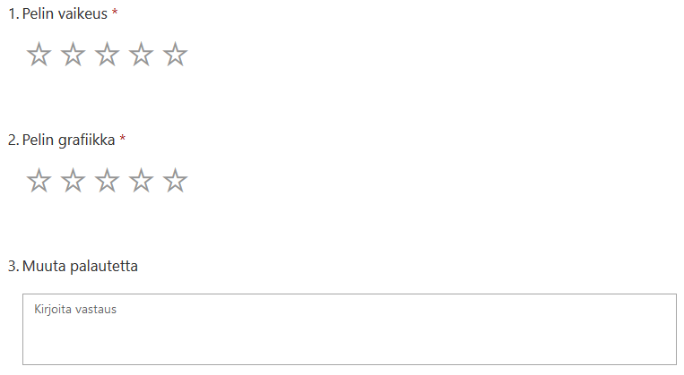
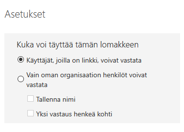

Projektityö
Yleistä
Tehtävänanto projektille kuvaa yleisellä tasolla mitä osasuorituksia tekemisen aikana tulisi saada tehtyä. Aihe on työlle vapaa, voit itse miettiä sinulle sopivan tuoteidean.
Osatehtävät
GitHub
- Lisää unity-kurssille oma projektiseinä (Project). Käytä Board-mallia ja lisää sarakkeet To do, In progress sekä Done.
- Mieti To do -sarakkeeseen mitä tehtäviä projektisi sisältäisi. On parempi jakaa työ mielummin liian pieniin kuin liian suuriin osatehtäviin.
- Lisää tehtäviksi myös Loppuraportti, Pelitestaus ja Esittely
Tuntiseuranta
- Käytä MS Excel-taulukkoa johon kirjataan toteutuneet tunnit. Esimerkki tuntien suunnittelusta (aikataulu) ja seurannasta: Excel-taulukko projekti_tunnit.xlsx. Lopputulosta hyödynnetään loppuraportissa ja nähdään mihin aika on kulunut.
Pelitestaus
Testauksen palautteen kerääminen lomakkeen avulla
- tehdään Microsoft Forms (tai Google Forms) lomake
- lomake lähettää tiedot sinun Office365-Excel-lomakkeeseesi
- tarkoitus käyttää 9lk tutustujien kanssa.
Microsoft Forms
- suunnittele uusi kyselylomake
- ei tarvita montaa kysymystä, tarkoitus olla sellainen jolla saat nopeasti palautetta pelitestauksen jälkeen
- voit käyttää esim tähtiä ja avointa palautetta kysymyksissä

Kun lomkkeesi on valmis
- Muuta asetuksista käyttöön valinta "Käyttäjät, joilla on linkki, voivat vastata"

- Jaa lomake

- kopioi linkki Eerikin jaettuun MS Excel-taulukkoon sarakkeeseen "Testauslomake"
Loppuraportti
- 1. Yleistä
- Kerro lyhyesti millainen peli kyseessä
- Peli-ideasi ja pelin päämäärä
- Pelimekaniikka, pelin toimintojen esittely
- Kohderyhmä ja miten huomioitu pelissäsi
- Ajankäyttö: miten ajankäyttösi jakautui projektityössä? Voit käyttää kaaviota jos osaat sellaisen tehdä tuntiseurannastasi.
- GitHub-projektiseinän tehtävät, ota kuvaruutukaappaus. Voit myös katsoa sopisiko kaavio tehtävien edistymisestä työhösi (Generate Chart).
- Lisää linkki WebGL-julkaisuun
- Lisää linkki GitHub-repoosi
- Dokumentin ulkoasu: lisää etusivu, sisällysluettelo sekä ylätunniste jossa oma nimesi sekä sivunumerot.
- Kerro lyhyesti millainen peli kyseessä
- 2. Pelin käyttöliittymä
- Ota kuvaruutukaappaukset tärkeimmistä pelisi näkymistä.
- Kerro sanallisesti mitä pelisi objektit ovat (mitä kuvassa näkyy).
- Lisää kuville otsikot (caption).
- 3. Skriptien kuvaus
- 1.) Visio: Staattinen UML rakenne tai Draw.io:n luokkakaavio. Lisää luokat (skriptit), luokille attribuutit (muuttujat) ja metodit (aliohjelmat).
- tai 2.) Tee taulukko jossa luettelet projektin sisältämät skriptit ja kerrot mikä niiden tarkoitus on.
- 4.Testauksen tulokset
- Mitä mieltä testaajat olivat pelistäsi, ota mukaan mielellään kaavioita kyselystäsi? Lisää linkki tekemääsi Forms-kyselylomakkeeseen.
- Kerro sanallisesti miten testaus meni oman pelisi osalta.
- Ota tuloksistasi tärkeimmät kaaviot mukaan työhösi.
- 5. Jatkokehitys
- Jäikö työhön jatkokehitykseen asioita? Miten työtä voisi täydentää myöhemmin?
- Mitä asioita olisit halunnut ehkä tehdä toisin (aika, osaaminen syynä)
- 6. Itsearvio
- Miten onnistuit, mitä opit
- Olisiko jotain mitä tekisit mahdollisesti toisin jos aloittaisit projektin nyt
- Ohjelmiston toteuttaminen ohjelmistokomponenttikirjastolla 30 osp (peruskoulupohjaiset)
- Ohjelmointiympäristön käyttö 15 osp (lukiolaiset, valinnainen tutkinnon osa)
Pohdi ammattitaitovaatimuksia ja kerro miten onnistuit niiden perusteella. Anna itsellesi myös jokin numeroarvio (T1-K5).